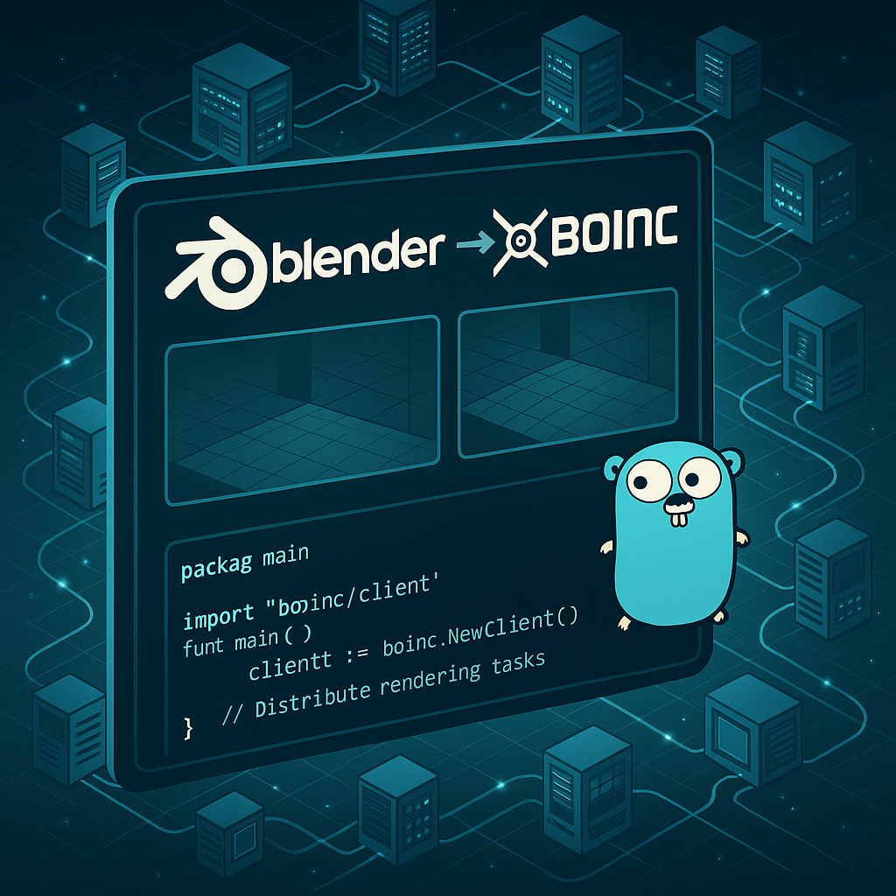

Recently we have launched the first BUDA application on BOINC Central. Despite it requiring a still unreleased version of the BOINC client, results are already amazing, and thanks to our users, we were able to identify and fix a lot of issues during this alpha testing phase. It turned out, the most problematic OS is macOS that prevents our users from having a smooth experience. As you may know, to run a BUDA application it's required to have either Docker or Podman installed, and this causes all the issues, since we had to implement additional mechanisms to keep our users protected while at the same time being able to run applications inside the container that is managed by either Docker or Podman.
While we are working on some little (but still important) improvements before we can make an official release of BOINC client, we already started to look further. Right now the first BUDA application is run on CPU only, but our goal is to run GPU applications as well.
This is not as easy as it looks like.
First of all, we have to deal with 3 operating systems: Linux, macOS and Windows. While we don't expect any issues on Linux, macOS and Windows look challenging. As you may know, on Windows there is no possibility to run Linux containers (neither with Docker nor with Podman) without WSL, that is another layer of virtualization between the Windows and the Linux kernels. While Microsoft promises a smooth experience with GPU on WSL, it still needs to be carefully tested, and this needs to be done with all three possible GPU vendors: AMD, Intel and NVIDIA.
For this purpose it was decided to create a sample BUDA application on BOINC Central that could run on all 3 supported OSs with all possible GPU configurations. We chose Blender as the best solution for that. First of all, because we don't need to deal with the GPU code directly from our application since this is something Blender is already doing very well. Second, there was already a BOINC project called BURP that was running Blender applications long ago. So we definitely know this is something that will work.
To explain further, I need to mention first that my main programming language is C++. During my career (almost 14 years already if counting only the commercial experience) besides C++ I have used several other languages like: Pascal, Object Pascal (together with Delphi), C#, VBA, Python, Java and Kotlin (I didn't mention here bash and similar languages since these are mostly tooling languages, and aren't really used in serious production). Despite this variety of languages, I wanted to use something new, and this new BUDA application to run Blender was just a perfect case, since it's not part of the BOINC codebase (and is really a completely separate application), and thus we don't need to keep all the pieces as close as possible. So I chose Go, because this is the language I wanted to try for a long time already, but just never had a use case for it.
Several years ago I read a book about this language, and while I found the language quite interesting, I really saw that for the projects I worked on during all this time it was not applicable. And now its time has just come.
I easily created a new application using Go during one evening. Of course, since it's 2025, I have used GitHub Copilot to help me during this learning journey. And this was really a great experience: just with a few simple prompts it generated template functions that were almost ready to be tested. I have reworked manually almost all the code that was generated, but Copilot also helped me to optimize some syntax and suggest using some already existing functions from the standard library.
I really think that GitHub Copilot (and/or similar tools) are a must-have nowadays, since they help you a lot and boost your productivity. On the other hand, it's always important to review generated code very carefully and test it as much as possible to uncover all hidden issues. But even if these tools can help you and generate the code with just a prompt, it doesn't mean that the engineer may not have essential computer science knowledge.
Generated code is almost never perfect, and usually much slower than hand-written code, but it gives you the possibility to simplify routine actions and fill the template that later should be verified and improved by the engineer. And if the engineer doesn't understand the code that was generated - this becomes very dangerous.
And this is something that scares me: before you had some level of trust in engineers, but nowadays you don't really know if the code was at least reviewed after being automatically generated by any LLM. Also, this gives you a false feeling of simplicity in the code writing process, and if you can't see the hidden issues by just looking at the code, you will never be able to improve it and make it fast and secure. Unfortunately, at the moment there is no LLM that can make all the work in the best possible way. I am not afraid that in the next few years LLMs will replace all the developers and engineers, but I'm afraid that during the next several years we will see a large amount of critical vulnerabilities in very different software. But I still look into the future with hope and excitement.
Meanwhile, I continue working on this new BUDA application for Blender, and in the next few days it might appear at BOINC Central. I don't expect it will have a lot of work, but during the test phase while we will be verifying both CPU and GPU versions of it, there might be some test tasks available from time to time.
If anybody is interested in rendering something with Blender - feel free to contact me, and we can add your projects as a part of our testing phase.
Stay tuned!